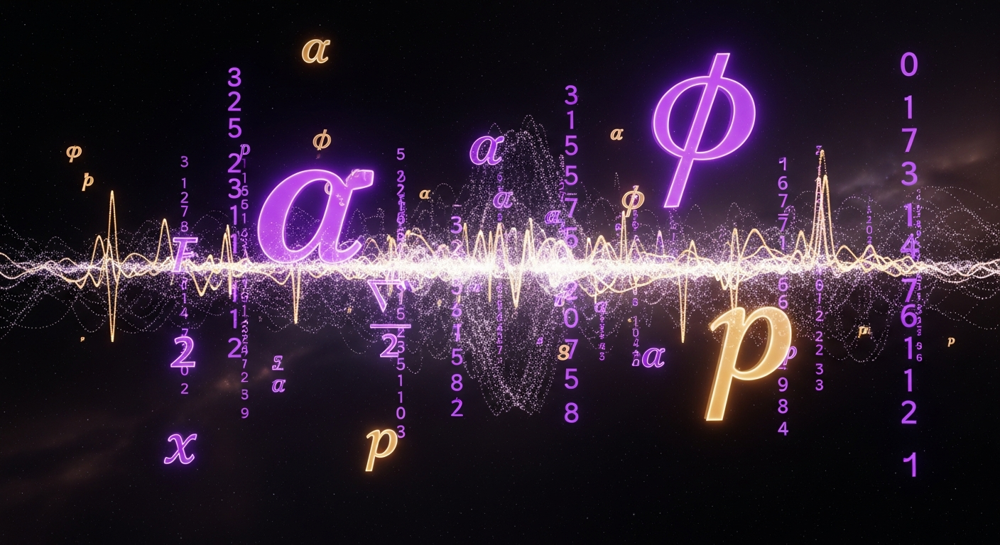
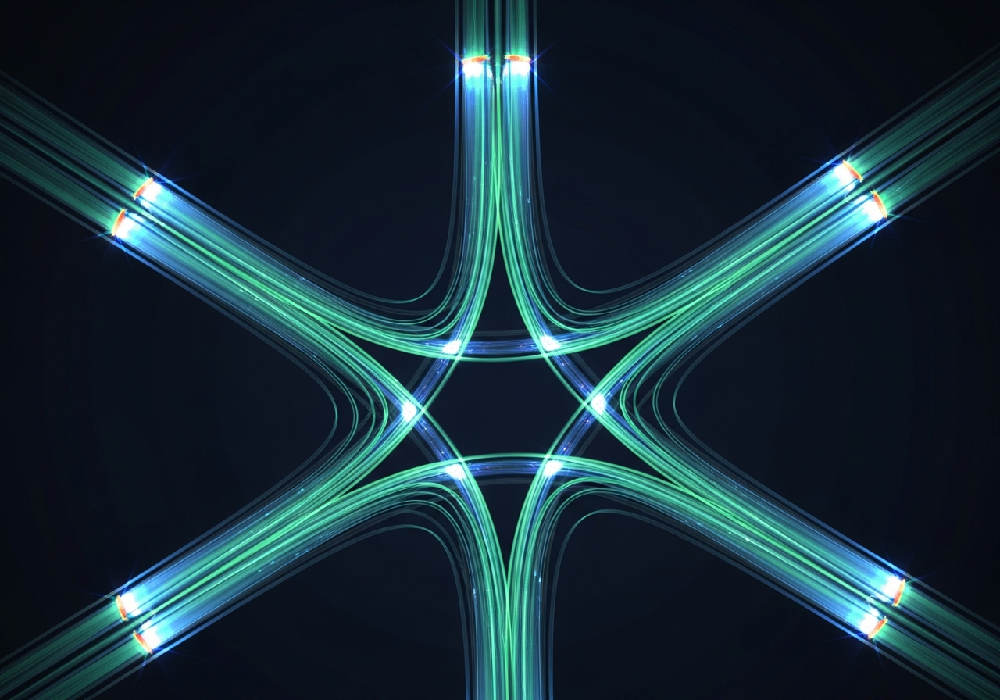
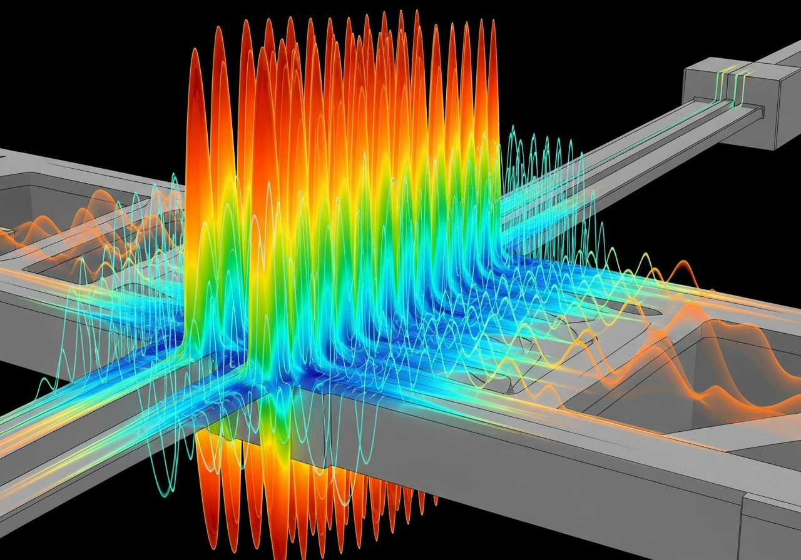
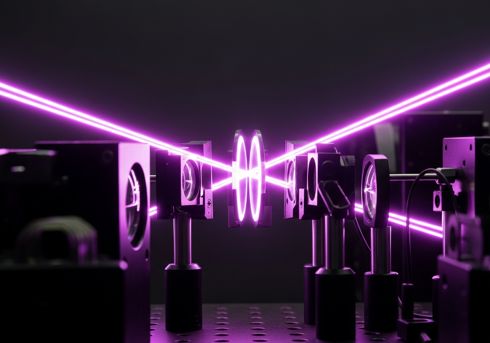

A Solution to a Longstanding Open Problem in Operator Theory and Quantum Mechanics
A central open problem in operator theory and PT-symmetric quantum mechanics is how to
construct metric operators explicitly for non-Hermitian
J-self-adjoint operators in Krein spaces.
Existing theory often guarantees existence, but not a concrete formula. This project solves that gap in the finite-dimensional setting by showing that, for a positive invariant subspace isolated by a spectral gap, the metric operator is uniquely determined and can be written explicitly as the Gram matrix of the J-inner product. This gives a computable framework for turning a non-Hermitian operator into a self-adjoint one on the relevant subspace, with direct applications to stability analysis and quantum mechanics.
For many years, one of the quiet but fundamental problems in non-Hermitian operator theory has been this: when an operator is not Hermitian in the usual sense, can we still find the right inner product that reveals a hidden self-adjoint structure? This question becomes especially deep in Krein spaces, where the geometry is indefinite and the usual notion of length and orthogonality breaks down.
In PT-symmetric quantum mechanics, this is not just a mathematical curiosity — it is the difference between a system that looks physically inconsistent and one that can be given a meaningful, stable interpretation. The real obstacle has never been existence alone.
"Abstract theorems guarantee a metric exists, but leave open the harder question: what is it exactly, and can it be computed?"
Three landmark results that solve the open problem constructively.
Let ℋ be a J-self-adjoint
matrix on a finite-dimensional Krein space, and let P be a
d-dimensional subspace that is positive under
J and invariant under ℋ.
Then there exists a unique invertible operator —
the metric — satisfying the intertwining relation with ℋ.
Gram Matrix Formula
Gij = ⟨ei, J · ej⟩
Let P and
P' be two orthogonal
projections onto d-dimensional
subspaces with the same J-positivity
condition. The map from projection to Gram matrix is
Lipschitz continuous with constant
2||J|| to first order.
Small changes in the subspace produce small, controlled changes in the metric.
For an analytic perturbation
ℋ(ε) = ℋ + εV
where V is also
J-self-adjoint, the metric operator
varies analytically in ε for small |ε|.
The first-order change satisfies a Lipschitz bound, proving the construction is robust
against small perturbations.
Since P is positive under J,
the J-inner product restricted to P
becomes a genuine positive-definite Hermitian form. By the finite-dimensional Riesz
representation theorem, there is a unique positive-definite self-adjoint operator
G such that
[x,y]J = ⟨x, Gy⟩
for all x,y ∈ P.
The explicit formula Gij = ⟨ei, J·ej⟩
in any orthonormal basis. Positivity guarantees G
is invertible — a concrete, computable object rather than an abstract existence result.
Using the J-self-adjointness of
ℋ and the invariance of P,
one shows ℋ*G = Gℋ on P.
This makes ℋ Hermitian in the new inner product — the
hidden self-adjoint structure is revealed.
Computational experiments independently confirmed all theoretical predictions.
Perfect Stability
Stability Breakdown
Conclusion: The method is robust for small perturbations, and its stability limits are well-defined and reportable — a sign of a mature, honest theory.
The constructive framework opens concrete pathways across four engineering and science domains.



Tawfiq Jallad
Majd Jallad
Inspiration for this research came from an Advanced Operator Theory course and experience through GHIS. All mathematical symbols and equations were carefully constructed using LaTeX, 2026.